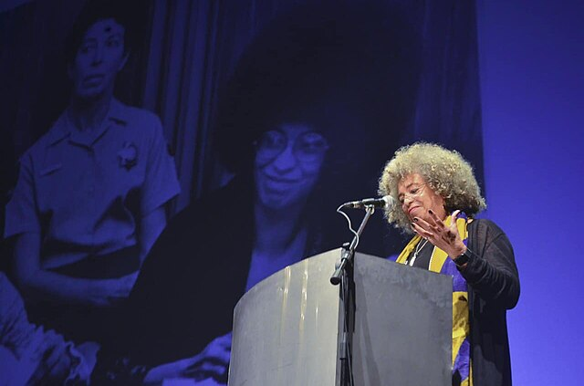
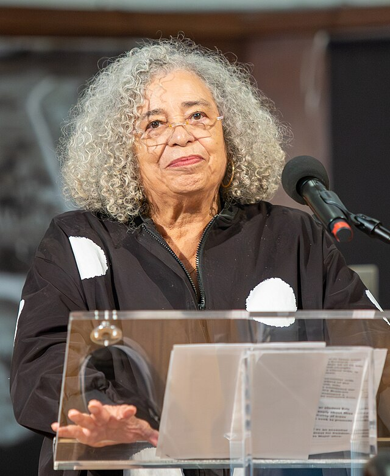
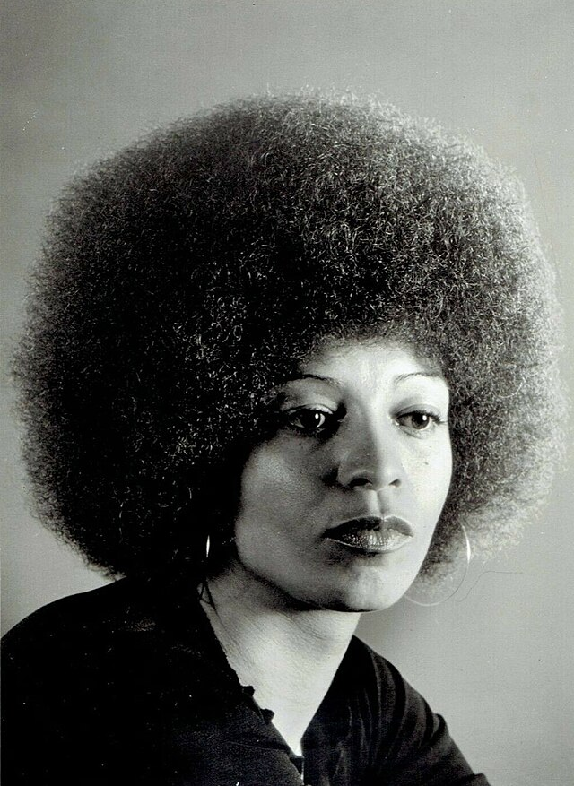
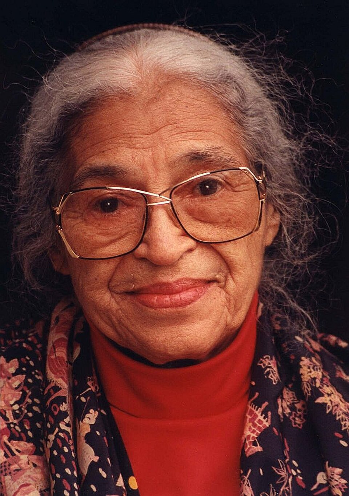
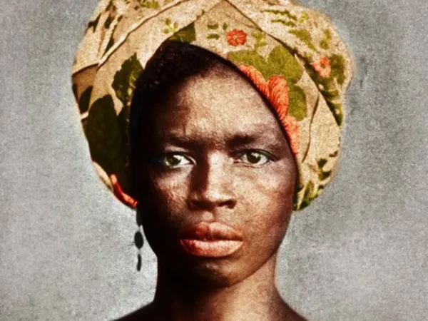
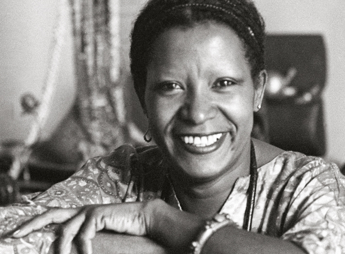
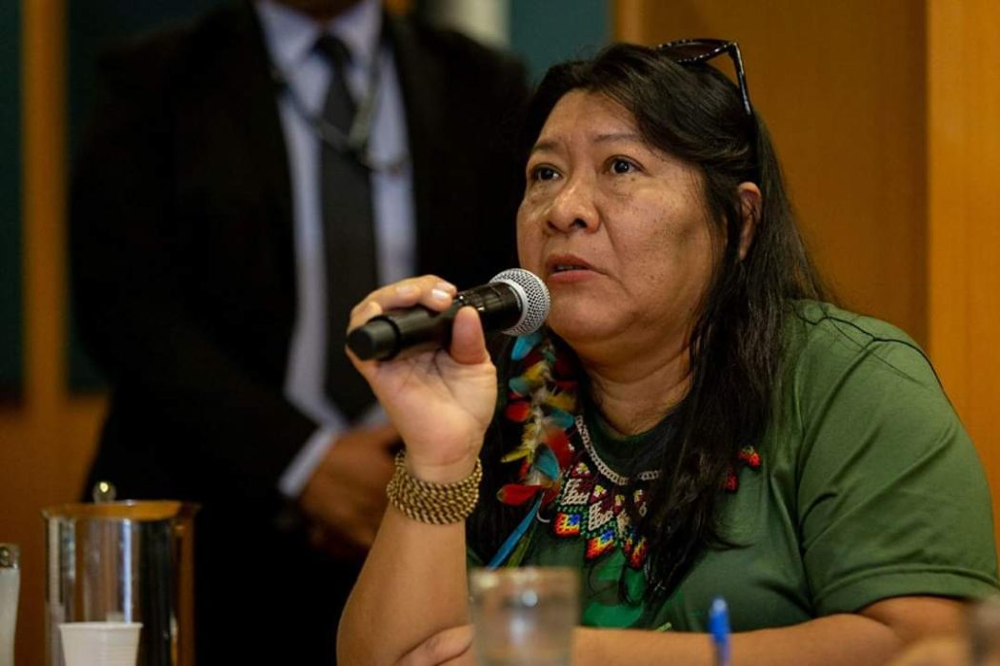

1944
Nasce em Birmingham, Alabama, nos Estados Unidos, em um contexto marcado pela segregação racial. Filha de professores e ativistas, cresce em um ambiente que valoriza a educação, a consciência política e o engajamento social desde a infância.

"Quando a mulher negra se movimenta, toda a estrutura da sociedade se movimenta com ela."
Angela Davis
Foto: Funcrunch, via Wikimedia Commons - CC BY-SA 4.0
Trajetória inicial: origens, formação e engajamento social.

Foto: Funcrunch, via Wikimedia Commons (CC BY-SA 4.0)
Filha de professores e ativistas, Angela Davis cresceu em uma família que valorizava profundamente a educação, o pensamento crítico e o engajamento político. De origem afro-americana, sua infância foi marcada por um ambiente de resistência e conscientização, o que influenciou diretamente sua formação intelectual. Desde cedo, destacou-se nos estudos, ingressando em instituições de ensino de prestígio, onde aprofundou seus conhecimentos em filosofia e ciências sociais. Além disso, teve experiências acadêmicas no exterior, que ampliaram sua visão de mundo e contribuíram para o desenvolvimento de uma perspectiva crítica sobre questões sociais e políticas.
Nos seus primeiros engajamentos, Angela Davis aproximou-se de movimentos estudantis e organizações políticas voltadas à luta contra o racismo e as desigualdades sociais. Ao longo de sua trajetória, realizou deslocamentos para diferentes cidades e países, buscando tanto formação acadêmica quanto participação ativa em causas sociais. Nesse percurso, enfrentou intensa vigilância, perseguições políticas e repressão por suas ideias e posicionamentos. Esses desafios, longe de enfraquecê-la, fortaleceram seu compromisso com a justiça social e os direitos humanos, consolidando sua atuação como uma das principais vozes críticas de seu tempo.
Nasce em Birmingham, Alabama, nos Estados Unidos, em um contexto marcado pela segregação racial. Filha de professores e ativistas, cresce em um ambiente que valoriza a educação, a consciência política e o engajamento social desde a infância.
Ingressa na Brandeis University, onde estuda filosofia. Nesse período, entra em contato com importantes correntes de pensamento crítico, desenvolvendo uma visão mais aprofundada sobre racismo, desigualdade social e estruturas de poder.
Realiza intercâmbio na Europa, passando pela França e pela Alemanha, onde estuda na Universidade de Frankfurt. Nesse período, aprofunda seus estudos em teoria crítica e marxismo, ampliando sua formação intelectual.
Retorna aos Estados Unidos e continua sua formação na University of California, San Diego, onde faz pós-graduação em filosofia. Torna-se professora universitária e passa a ganhar destaque por suas ideias e por sua militância política.
Leciona na UCLA, é afastada por suas ligações políticas e, posteriormente, acusada em um caso judicial de grande repercussão. É presa por cerca de 18 meses, período em que surge uma mobilização internacional por sua libertação. Em 1972, é julgada e absolvida, tornando-se símbolo da luta contra injustiças sociais.
Retoma sua carreira acadêmica e passa a lecionar em universidades, consolidando-se como professora e intelectual. Publica obras importantes sobre racismo, feminismo, desigualdade social e sistema prisional, além de atuar em movimentos sociais.
Amplia sua atuação internacional em debates sobre feminismo negro, direitos humanos, democracia e abolicionismo penal. Suas palestras e livros passam a circular mundialmente, fortalecendo sua presença como referência intelectual e política.
Permanece ativa em debates globais sobre racismo, feminismo, sistema prisional e direitos humanos. Continua participando de conferências, escrevendo livros e inspirando movimentos sociais em diferentes países.
Coragem intelectual, compromisso político e impacto coletivo.

Foto: Philippe Halsman, 1974 - via Wikimedia Commons (domínio público)
Angela Davis é uma mulher extraordinária porque transformou sua trajetória pessoal em uma luta coletiva por justiça, liberdade e igualdade. Ao longo de sua vida, uniu pensamento crítico, produção acadêmica e atuação política, tornando-se uma das principais referências nos debates sobre racismo, feminismo, direitos civis e sistema prisional.
Mesmo diante de perseguições políticas, prisão e tentativas de silenciamento, manteve firme seu compromisso com a transformação social. Sua trajetória é marcada pela resistência, pela coragem e pela determinação em enfrentar estruturas que produzem desigualdade e exclusão.
Seu legado ultrapassa seu próprio tempo. Angela Davis continua inspirando novas gerações a questionar injustiças, compreender as relações entre diferentes formas de opressão e lutar pela construção de uma sociedade mais justa e igualitária. Mais do que uma figura histórica, ela representa a força do conhecimento, da resistência e da ação coletiva como instrumentos de transformação social.
Seu legado ultrapassa seu próprio tempo. Angela Davis continua inspirando novas gerações a questionar injustiças, compreender as relações entre diferentes formas de opressão e lutar pela construção de uma sociedade mais justa e igualitária. Mais do que uma figura histórica, ela representa a força do conhecimento, da resistência e da ação coletiva como instrumentos de transformação social.
Influência sobre arte, política, educação e comunidades.
O legado de Angela Davis continua a inspirar movimentos sociais, estudantes, pesquisadores e novas lideranças ao redor do mundo. Sua defesa da justiça, da igualdade e dos direitos humanos demonstra como o pensamento crítico, aliado à ação política e à organização coletiva, pode questionar estruturas como o racismo, o sexismo e as desigualdades sociais.
Ao longo das décadas, suas ideias fortaleceram as lutas por direitos civis, contribuíram para o feminismo negro e ampliaram os debates sobre raça, gênero, classe e sistema prisional. Sua produção intelectual também reforça a importância da educação como ferramenta para compreender injustiças e promover mudanças na sociedade.
Angela Davis também se tornou uma importante referência nas discussões sobre encarceramento em massa e desigualdades presentes no sistema de justiça. Suas reflexões incentivam uma análise mais crítica sobre punição, criminalização e direitos humanos.
Hoje, seu legado permanece vivo entre jovens ativistas e novas gerações que encontram em sua trajetória um exemplo de resistência, coragem e compromisso coletivo. Sua atuação mostra que conhecimento, organização e participação social podem contribuir para a construção de uma sociedade mais justa e igualitária.
Fotos e documentos representativos.

Cartaz histórico do período em que Angela Davis foi procurada pelo FBI, símbolo da perseguição política nos Estados Unidos na década de 1970.
Foto: Federal Bureau of Investigation, 1970 - via Wikimedia Commons (domínio público)

Conferência do Comitê para Libertar Angela Davis no Centro de Educação Marxista, em Nova York, em 1971, com Louise Thompson Patterson, Fania Davis e Felicia Coward.
Foto: Bill Andrews, 1971 - via Wikimedia Commons (domínio público)

Angela Davis participa de manifestação em apoio aos Soledad Brothers, destacando sua atuação na luta por justiça social.
Foto: Ray Graham, 1970 - via Wikimedia Commons (CC BY 4.0)
Livros, artigos e documentos históricos.
Obra clássica que analisa a relação entre racismo, feminismo e desigualdade social ao longo da história. Link: https://www.amazon.com.br/Mulheres-Ra%C3%A7a-Classe-Angela-Davis/dp/8575595032
Coletânea de ensaios que discutem feminismo, cultura e movimentos sociais. Link: https://www.amazon.com.br/Mulheres-Cultura-Pol%C3%ADtica-Angela-Davis/dp/8575596217
Reflexões sobre direitos humanos, ativismo e a luta global por liberdade. Link: https://www.amazon.com.br/Liberdade-%C3%A9-uma-Luta-Constante/dp/8575595431
Biografia completa com contexto histórico e acadêmico da trajetória de Angela Davis. Link: https://www.britannica.com/biography/Angela-Davis
Resumo acessível sobre a vida, o ativismo e o impacto político de Angela Davis. Link: https://www.biography.com/activist/angela-davis
Artigo com visão geral sobre sua vida, carreira acadêmica e atuação política. Link: https://en.wikipedia.org/wiki/Angela_Davis
Conheça outras trajetórias marcantes da luta por justiça e transformação social.

Foto: John Mathew Smith / www.celebrity-photos.com, via Wikimedia Commons.
Símbolo da luta contra a segregação racial nos Estados Unidos e referência mundial em coragem civil.
Saiba mais
Estrategista quilombola cuja resistência ajudou a marcar a luta negra por liberdade no Brasil.
Saiba mais
Intelectual fundamental para os debates sobre feminismo negro, cultura e desigualdade racial no Brasil.
Saiba mais
Liderança indígena e jurista que ampliou a presença dos povos originários nos espaços de decisão.
Saiba mais